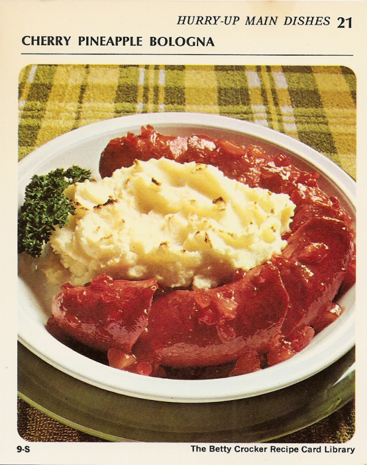

Back to table of contents
Cherry Pineapple Bologna

Ingredients
- 1 pound ring bologna
- Cherry Pineapple Glaze (See Recipe Below)
- Potato Buds instant puffs (enough for 4 servings)
Ingredients for the amazing Cherry Pineapple Glaze:
- 1/2 cup crushed pineapple
- 1/4 cup coarsely chopped maraschino cherries
- 1/4 cup light corn syrup ('Murica!)
- 2 tablespoons white vinegar
- 1/4 teaspoon cloves
- 2 drops red food color ('Murica!)
- 1 1/2 teaspoons water
- 1 1/2 teaspoons cornstarch
Preparation
Let us start with our amazing Cherry Pineapple Glaze first!
- Heat pineapple, cherries, corn syrup, vinegar, cloves and food color to boiling, stirring occasionally.
- Reduce heat; simmer 15 minutes.
Blend water and cornstarch; stir into fruit.
- Cook, stirring constantly, until mixture thickens and boils.
Boil and stir 1 minute.
Now let's get the bologna business done:
- If necessary remove casing from bologna; arrange bologna in ungreased 9-inch pie pan.
Cut ring diagonally at 2-inch intervals, being careful not to cut completely through.
Separate cuts and spoon in part of glaze.
Spread remaining glaze on top.
- Heat oven to 400°.
Prepare Potato Buds instant puffs as directed on package.
Mound potatoes in center of ring.
Bake 20 minutes or until potatoes are light brown.
Makes 4 hearth-healthy servings.